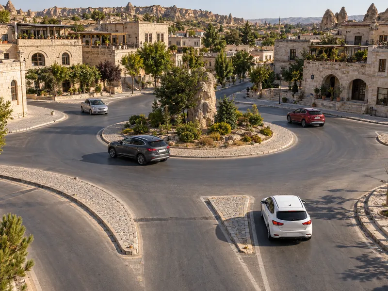

Kim önce geçer?
Araçlara geçiş sırasına göre dokun (ya da A/B tuşları). Doğru sırada araçlar kavşaktan geçer; yanlış seçimde ne olacağını görürsün. İşaretsiz kavşaktan trafik görevlisine 6 durum. Hedef: hepsini çöz.
Trafik ve ÇevreKonu 8 / 1762 çıkmış soruUygulamalı
Kavşaklarda kimin önce geçeceğini belirleyen geçiş hakkı kurallarını, kontrollü ve kontrolsüz kavşaklarda uygulanacak sıralamayı, sağa-sola dönüş ve dönel kavşak kurallarını ve geçiş üstünlüğüne sahip araçları kapsar.

Geçiş hakkı, yayaların ve sürücülerin yolu kullanırken diğerlerine göre önce geçme hakkıdır. Geçiş üstünlüğü ise ambulans, itfaiye ve polis gibi belirli araçların görev sırasında, can ve mal güvenliğini tehlikeye sokmamak şartıyla trafik yasak ve kısıtlamalarına bağlı olmamasıdır. Bu iki kavram sınavda sıkça karıştırılır.
Kavşaklar çarpışma riskinin en yüksek olduğu yerlerdir. Kavşağa yaklaşan sürücü hızını azaltır, gerektiğinde durabilecek durumda olur ve gideceği yöne uygun şeride önceden girer. Kavşak içinde ve kavşağa çok yakın yerlerde öndeki aracı geçmek, şerit değiştirmek, duraklamak ve park etmek yasaktır.
Trafiğin görevli, ışıklı işaret veya levhalarla düzenlendiği kavşaklardır. Önce görevliye, sonra ışıklara, sonra levhalara uyulur. Levhalarla düzenlenen kavşaklarda temel kural şudur: yolunda yol ver veya DUR levhası bulunan sürücü tali yoldadır ve ana yoldaki araçlara yol verir; DUR levhasında önce tam durulur. Ana yol, ana yol levhası ya da ana yol–tali yol kavşağı uyarı levhasıyla belirtilir.
Ana yolun kendi içinde de dönüş kuralı geçerlidir. Ana yolda düz giden bir araç, ana yolda sola dönen bir araç ve tali yoldan gelen bir araç karşılaştığında sıra şöyledir: önce ana yolda düz giden, sonra ana yolda sola dönen, en son tali yoldan gelen. İki yolda da yol ver levhası varsa yollar eşit sayılır ve aşağıdaki genel kurallar uygulanır. DUR levhalı yoldan durmadan çıkıp ana yolda düz giden araçla çarpışan sürücü, ilk geçiş hakkı kuralını ihlal etmiş olur.
Görevli, ışık veya öncelik levhası bulunmayan kavşaklarda sürücüler hızlarını azaltır ve geçiş hakkı kurallarına uyar. Şekilli soruları çözerken kuralları şu sırayla uygulayın:
Kavşakta dönüş yapan sürücü, girdiği yoldaki yaya geçidinde bulunan veya geçmek üzere olan yayalara ilk geçiş hakkını verir. Yayaları korna ile uyarıp durdurarak geçmek yanlıştır. Akaryakıt istasyonu, otopark gibi yol dışındaki bir alandan kara yoluna çıkan sürücü de yolda seyreden araçların geçmesini beklemek zorundadır.
| Aşama | Sağa dönüş | Sola dönüş |
|---|---|---|
| Niyeti bildirme | Önceden sağa dönüş lambası yakılır. | Önceden sola dönüş lambası yakılır. |
| Yaklaşma | En sağ şeride girilir, hız azaltılır. | Şeridin soluna yaklaşılır, hız azaltılır. |
| Kavis | Dar kavis (kaldırım tarafına yakın). | Geniş kavis (kavşak ortasının yakınından). |
| Tamamlama | Dönüş, girilen yolun en sağ şeridinde tamamlanır. | Karşıdan düz gelen araçlara ve yayalara yol verilerek dönülür. |
Sağa dönüşte doğru sıra: dönüş işaretini vermek → sağ şeride girmek → hızı azaltmak → dar bir kavisle dönmek.
Dönel kavşağa girecek sürücü yavaşlar ve kavşak içindeki araçlara yol verir. Geri dönüş yapacak sürücü kavşağa girmeden önce orta adaya en yakın şeride geçer ve ada etrafında bu şeritte döner. Ada etrafında dönerken gereksiz yere şerit değiştirmek yasaktır; çıkışa yaklaşınca kurallara uygun şekilde sağa geçilir.
Okuduğunuz kuralı ekranda uygulayın. Hedefi tamamlayınca uygulama biter; hatasız bitirirseniz 3 yıldız alırsınız.
Araçlara geçiş sırasına göre dokun (ya da A/B tuşları). Doğru sırada araçlar kavşaktan geçer; yanlış seçimde ne olacağını görürsün. İşaretsiz kavşaktan trafik görevlisine 6 durum. Hedef: hepsini çöz.
MEB sınavlarında bu konudan çıkmış 62 soru (15 tanesi en az üç sınavda soruldu). Her soruda doğru cevabı ve açıklamasını hemen görürsünüz.
Hangi sorular?
Sıralama